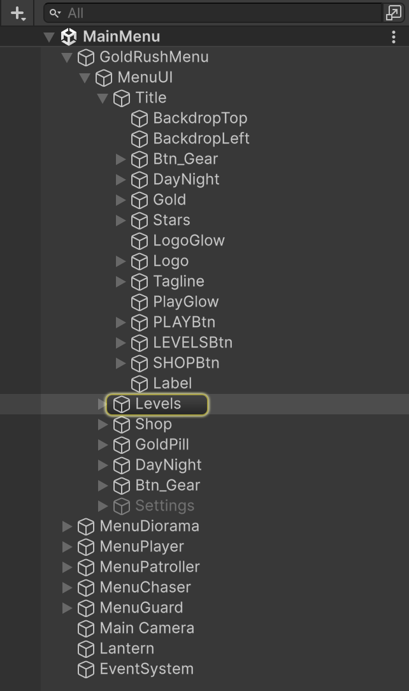
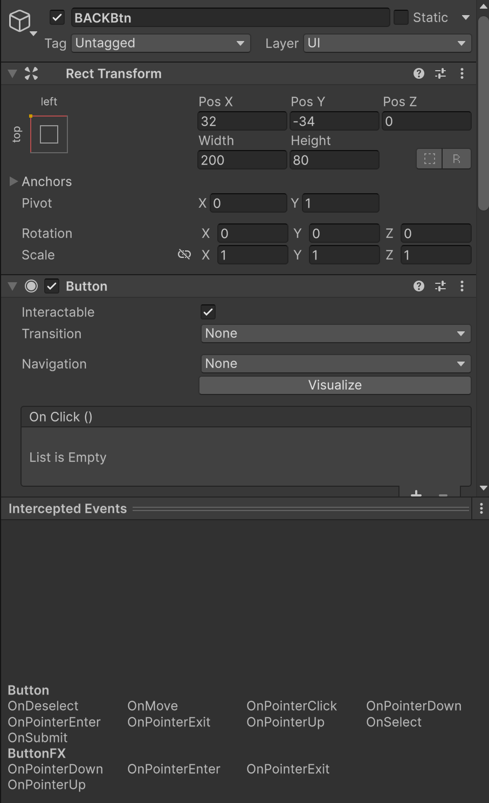
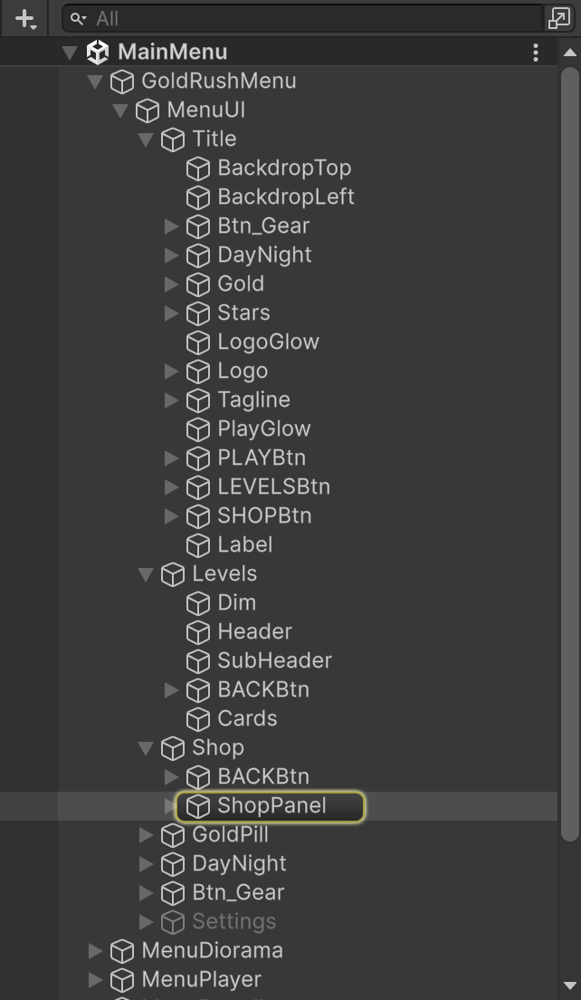
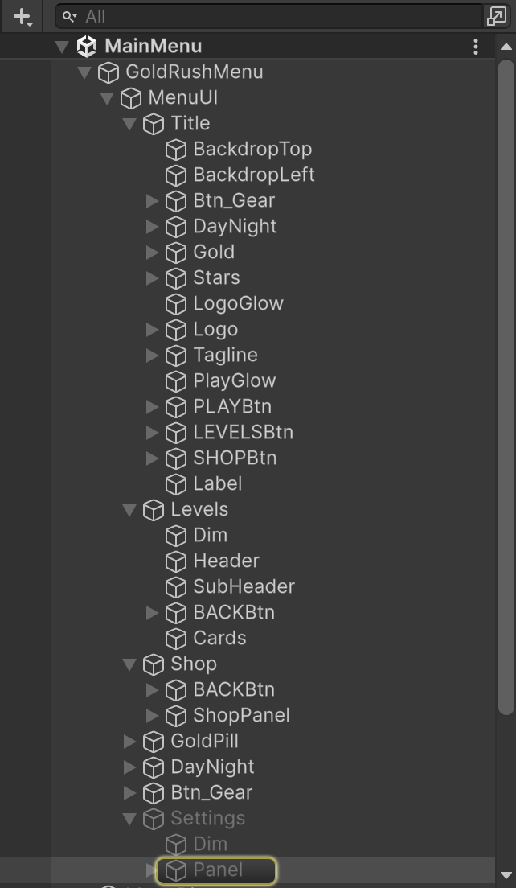
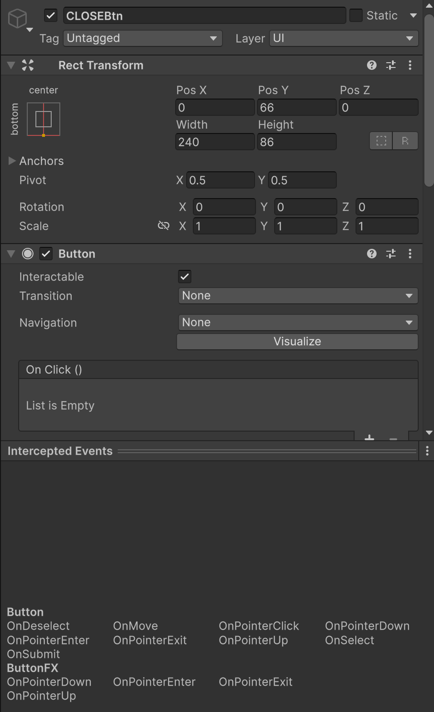
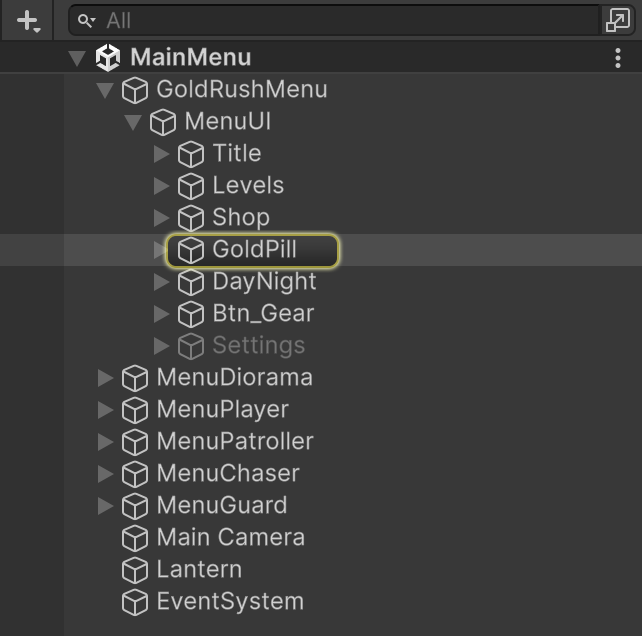
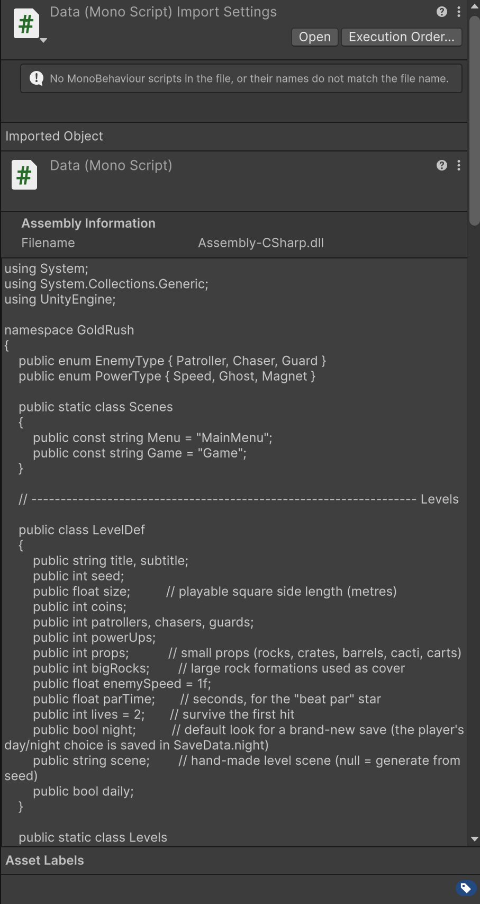

GOLD RUSH · Phase 2
Level select, shop and settings
You look at the other menu screens: SELECT LEVEL with the level cards, the SHOP with colours and hats, and the SETTINGS dialog with MUSIC and SOUND switches. The fixed parts are saved in the scene. The script fills in the cards and the shop items from data when a screen opens. You also learn how the game saves your gold, stars and items.
1What you get
The package has the same scene as Phase 1: Scenes/MainMenu. This time you look at the parts under MenuUI that are hidden on the title screen, and at the save data in Scripts/Core/Data.cs.
 SELECT LEVEL
SELECT LEVEL SHOP
SHOPThe menu shows one screen at a time: Title, Levels or Shop. Settings is a dialog on top of the screen. Every button says what it does with one word (Menu Action, see Phase 1):
| Button word | What it does |
|---|---|
play | Starts the newest unlocked level. |
levels / shop | Opens the Levels / Shop screen. The camera moves back (levels) or close to the hero (shop). |
back | Back to the Title screen. (Esc does the same.) |
settings / closeSettings | Opens / closes the Settings dialog. |
2Import
- Make a new empty project as in Phase 0, steps 2–5. Or delete the folder
Assets/GoldRushin your old project. - Open Assets → Import Package → Custom Package… → choose
GoldRush_Phase02_MenuScreens.unitypackage→ Import. - Open File → Build Profiles → Scene List. Drag
Scenes/MainMenuinto the list as number 0. - Open
Scenes/MainMenu. Game view: Full HD (1920x1080).
3Check
Check 1 · The Levels screen
Open GoldRushMenu/MenuUI/Levels. It fills the whole Canvas and has a Canvas Group (to fade in). Its children:
| Child | What it is |
|---|---|
Dim | A dark navy layer over the stage. Raycast Target off, so it does not block clicks. |
Header, SubHeader | "SELECT LEVEL" and "Collect all the gold, then run to the exit!" |
BACKBtn | The BACK chip at the top left. |
Cards | An empty box. The script puts the level cards in it when the screen opens. |

Check 2 · The BACK button
Select Levels/BACKBtn. It is a "chip button": Button, Button FX, Canvas Group and Menu Action = back. The Shop has the same button: Shop/BACKBtn.

Check 3 · The Shop screen
Open GoldRushMenu/MenuUI/Shop/ShopPanel. The panel stands on the right (900 × 880), so the hero stays visible on the left. Inside Glass:
Badge(orange circle with a bag icon),Title"SHOP",Subtitle"Colours & hats for your hero",Divider.TabsandGrid: two empty boxes. The script adds the COLORS / HATS tabs and the item cards.

Check 4 · The Settings dialog
Open GoldRushMenu/MenuUI/Settings. Its name is grey: it is inactive until you click the gear. It has a Dim layer (Raycast Target on, so you cannot click behind the dialog) and a Panel (600 × 440). Inside Panel/Face: the Ribbon "SETTINGS", two switches MUSIC ONBtn and SOUND ONBtn, and CLOSEBtn.

Check 5 · The CLOSE button
Select Settings/Panel/Face/CLOSEBtn. Menu Action = closeSettings (capital S). The MUSIC and SOUND switches have no Menu Action: the script connects them in BindSettings().

Check 6 · The top-right bar
Under MenuUI there is a second gear, day/night button and gold pill: Btn_Gear, DayNight, GoldPill. They show on the Levels and Shop screens at the top right. On the Title screen the script hides them, because the title has its own chips at the top left. They are in the Top Right field of Gold Rush Menu.

Check 7 · The save and shop data
Click Scripts/Core/Data.cs. The Inspector shows the code. It holds the level list, the save and the shop catalogue:
| Level | Title | Coins | Monsters | Par time |
|---|---|---|---|---|
| 1 | Training Yard | 6 | 2 patrollers | 40 s |
| 2 | Ghost Alley | 8 | 2 patrollers, 1 chaser | 60 s |
| 3 | King's Vault | 10 | 2 patrollers, 2 chasers, 2 guards | 85 s |
| 4 | Gold Fever | 13 | 3 patrollers, 3 chasers, 2 guards | 115 s |
| Colours | Hats |
|---|---|
| Classic 0 · Sunset 30 · Mint 30 · Royal 50 · Ruby 50 · Shadow 80 · Golden 200 | No Hat 0 · Cowboy 60 · Miner 80 · Top Hat 100 · Crown 250 |

4How it works
// Data.cs: the save is one object, stored as JSON text in PlayerPrefs
public class SaveData
{
public int gold;
public int unlocked = 1;
public List<LevelProgress> levels = new List<LevelProgress>();
public List<string> owned = new List<string>();
public string color = "color_blue";
public string hat = "hat_none";
public bool music = true;
public bool sfx = true;
// …
}
public static void Persist()
{
PlayerPrefs.SetString(Key, JsonUtility.ToJson(data));
PlayerPrefs.Save();
}- Save.
Save.Dataloads the save the first time you use it (keygoldrush_save_v1).Save.Persist()writes it back.Save.Fix()repairs an old or broken save: the free items are always owned,unlockedstays between 1 and 4. - One screen at a time.
Show(screen)turns on one screen and turns off the others. It hides the top-right bar on the Title screen. It moves the camera: Title close, Levels further back (8 m), Shop near the hero (3.8 m). - Cards from data. When the Levels screen opens,
BuildLevels()makes one card per level plus a Daily Rush card inCards. A level is locked when its number is bigger thanunlocked. A locked card shakes when you click it. - The Daily Rush.
Levels.Daily()makes a new level every day. Its random seed is today's date, so every player gets the same level today. - Buying.
OnShopItem(): not enough gold → error sound, the card and the gold pill shake. Else it takes the gold, adds the item toowned, wears it (colororhat), callsSave.Persist()and the hero waves. - Settings.
BindSettings()connects MUSIC and SOUND toSave.Data.musicandSave.Data.sfx. A click saves the value and mutes or unmutes the sound at once.
5▶ Press Play
- Open
Scenes/MainMenuand press ▶ Play. - Click LEVELS. Click the Level 2 card (locked). Click BACK.
- Click SHOP. Switch between COLORS and HATS. Click an item. Press Esc.
- Click the gear. Click MUSIC and SOUND. Click CLOSE.
- Stop Play mode and press Play again.
You should see:
- Title: the stars chip shows 0 / 12, the PLAY button says LEVEL 1 • TRAINING YARD.
- LEVELS: the camera moves back, the cards pop in. Level 1 and the Daily Rush are open; Levels 2–4 show a lock and shake. The top-right bar is visible.
- SHOP: the camera moves to the hero, who turns left and right. Without gold: an error sound, and the card and the gold pill shake.
- Settings: the dialog pops in over a dark layer. MUSIC OFF stops the music, SOUND OFF stops the clicks.
- After a restart your settings are still there.
6Try it
- Give yourself gold. In
Data.cs, inSaveData, changepublic int gold;topublic int gold = 500;and save. Stop Play mode and click Edit → Clear All PlayerPrefs (the default only counts for a new save). Press Play and buy something. Stop and press Play again: the item is still yours. Change it back and clear the PlayerPrefs again. - Change a price. In
Catalog.Colors, change"Golden", 200to20. The Golden card now says 20 GOLD. - Change a card text. In
Levels.All, change the subtitle"Learn the ropes"of Training Yard. Open LEVELS: the Level 1 card shows your text.
7Common problems
| Problem | Fix |
|---|---|
| Buying always fails. | You have 0 gold. You win gold in the levels (from Phase 6). For a test, see Try it 1. |
I changed gold = 500, but I still have 0. | The old save is still there. Stop Play mode → Edit → Clear All PlayerPrefs. |
| Cards, Tabs and Grid are empty in Edit mode. | Normal. The script fills them when the screen opens in Play mode. |
| I cannot see the Settings dialog in the Scene view. | It is inactive until you click the gear. To look at it, tick the box next to its name in the Inspector, and untick it again before Play. |
| A level card or PLAY: the screen goes black, the Console says the scene couldn't be loaded. | Normal. Level1 comes in Phase 3, Levels 2–4 and the Daily Rush (scene Game) in Phase 10. |
| I want to start again from zero. | Stop Play mode → Edit → Clear All PlayerPrefs. |
More fixes are on the Troubleshooting page. New words are in the Glossary.
Next: in Phase 3 you take a tour of the prefab kit and the first level. Then PLAY opens it.